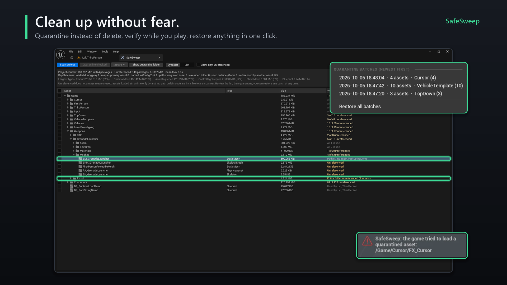
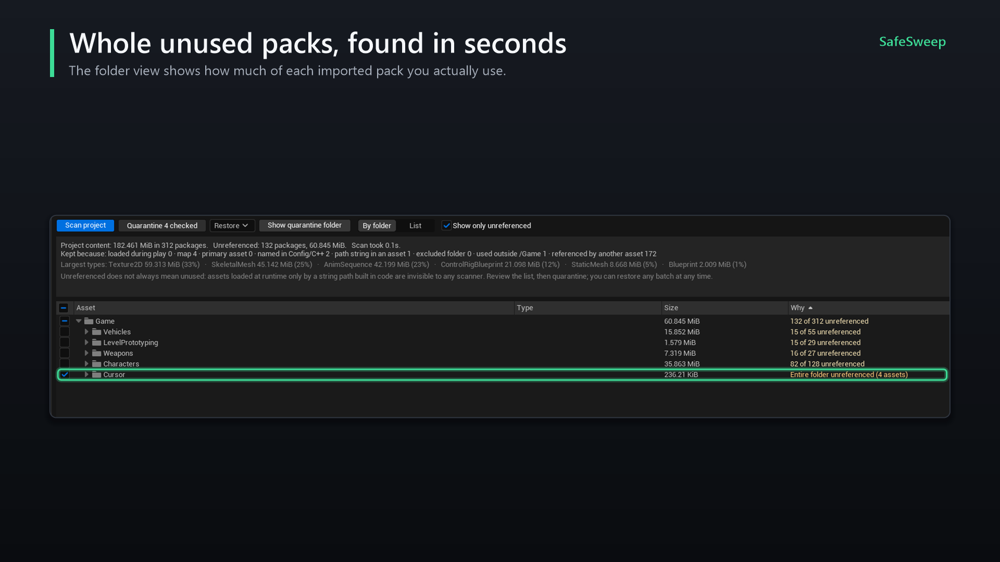
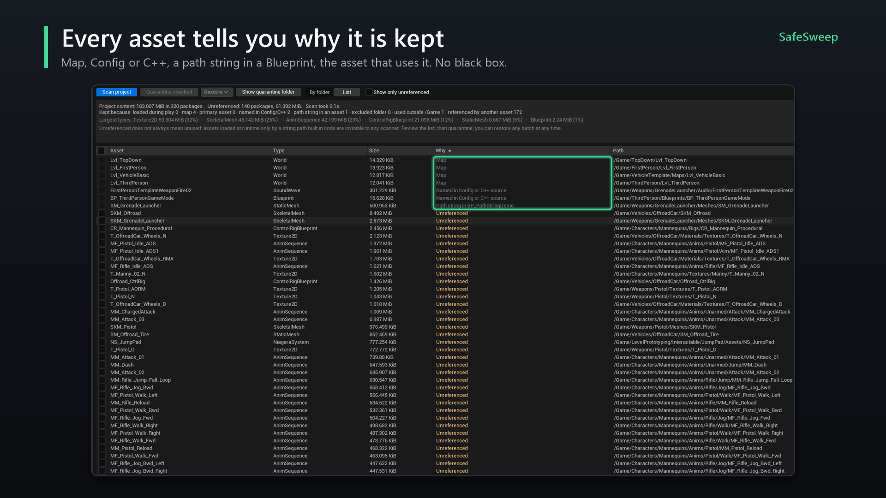
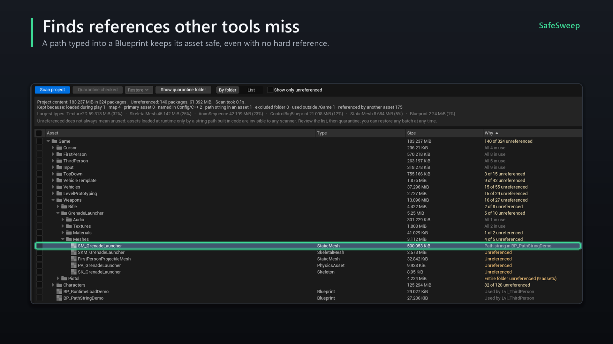
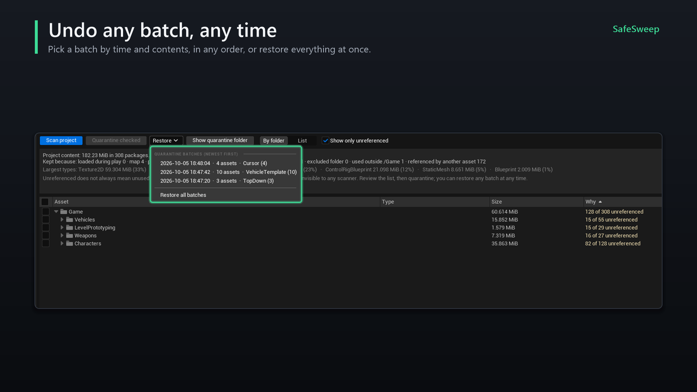
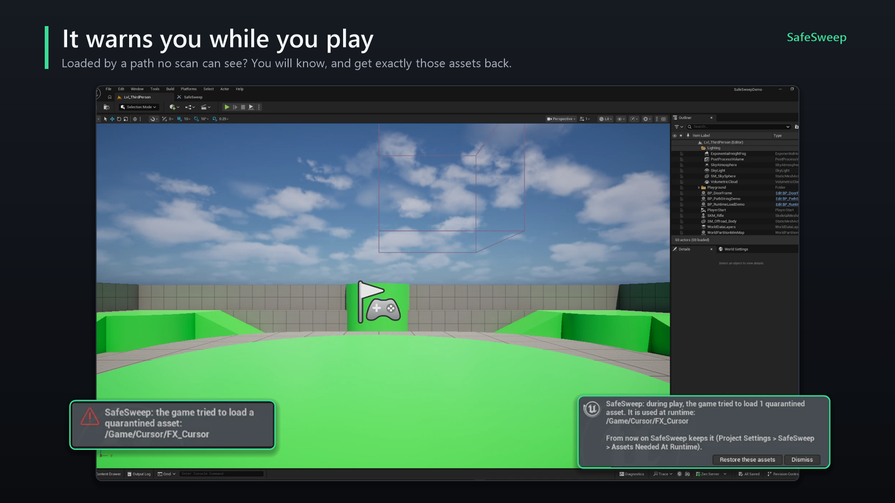
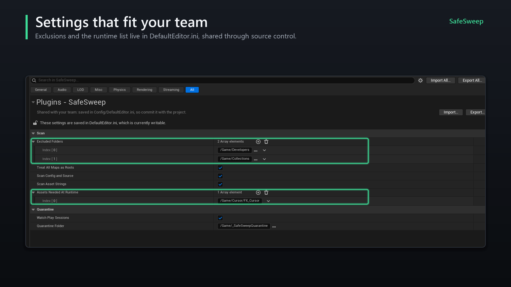

Clean up your Unreal project without the fear of deleting something you need.
SafeSweep shows what takes up space, tells you why every asset is kept, and moves what nothing uses into a quarantine you can restore at any time.
Quick start
- Enable the plugin under Edit > Plugins > SafeSweep and restart the editor.
- Open Tools > SafeSweep.
- Click Scan project. A typical project of a few thousand assets scans in well under a second.
- Review the result. Folders that are entirely unreferenced are highlighted; double-click any row to find it in the Content Browser.
- Tick what you want gone and click Quarantine checked. Nothing is deleted.
- Play your game in the editor. If it needs something you quarantined, SafeSweep tells you and offers to bring it back.
- When you are confident, delete the quarantine folder from the Content Browser. That is the only step that deletes anything, and it is yours.

The SafeSweep window
| Control | What it does |
|---|---|
| Scan project | Scans everything under /Game and refreshes the view. |
| Quarantine checked | Moves the checked assets into a new quarantine batch, after a confirmation. |
| Restore | Lists quarantine batches by time and contents. Restore one batch, in any order, or all of them. |
| Show quarantine folder | Opens the quarantine folder in the Content Browser. |
| By folder / List | Tree with totals per folder, or a flat list of every package. Click a column header to sort. |
| Show only unreferenced | Hides everything that is in use. |
| English / 한국어 | Switches the language of the window. The choice is saved per user. |
The summary at the top shows the total size, how many packages are unreferenced, the largest asset types, and a Kept because line that counts how many packages are kept for each reason.
In the folder view, a folder's checkbox selects every unreferenced asset inside it. The Why column reads Entire folder unreferenced, n of m unreferenced or All n in use.

How assets are judged
SafeSweep starts from everything that is known to be in use, then follows the Asset Registry's dependencies (hard, soft and Asset Manager references). Whatever is never reached is unreferenced. Every asset shows the reason it was kept, and hovering it shows the full path of the asset that keeps it.
| Reason in the Why column | Meaning |
|---|---|
| Loaded by the game during play | Listed in Assets Needed At Runtime, usually because the play-session guard saw the game load it. |
| Map | Every map is an entry point (can be turned off). |
| Primary asset | Known to the Asset Manager, including Primary Asset Labels. |
| Named in Config or C++ source | A /Game/... path appears in Config/*.ini, Source/ or a project plugin. A folder path keeps the whole folder. |
| Path string in asset | An asset that is in use contains this path as text: a string on a Load Asset node, a DataTable column, an actor property. |
| In an excluded folder | You excluded the folder in the settings. |
| Redirector | An ObjectRedirector. Never quarantined; use Update Redirector References instead. |
| Used by asset (outside /Game) | Referenced by plugin or engine content. |
| Used by asset | Referenced by another asset that is in use. |
| Unreferenced | Nothing above applies. |

Path strings inside assets
Assets that are already in use (Blueprints, DataTables, maps and other non-binary assets) are searched for /Game/... strings. What they name is kept too, and the search repeats until nothing new turns up. Textures, meshes, sounds and similar heavy types are skipped. Assets that are themselves unreferenced are not searched, so a path in an unused Blueprint does not keep anything alive.

World Partition and One File Per Actor
Actors saved in their own files (__ExternalActors__, __ExternalObjects__) count as part of their map: whatever they reference or name is kept, and the Why column names the map. Those actor files and map build data (*_BuiltData) are never listed.
What no scan can see
A path assembled at runtime from smaller pieces, or read from a save file or a server, leaves no trace in the project. Full paths and folder paths are found; pieces are not. That is what the play-session guard is for. Using soft references (TSoftObjectPtr, soft object path properties) instead of strings makes such loads visible to the editor, and to SafeSweep.
Quarantine and restore
Quarantining moves the checked assets to /Game/_SafeSweepQuarantine/<date_time>/, keeping their folder structure. SafeSweep uses Unreal's own rename, so references are fixed up exactly as with a move in the Content Browser. A record of every batch is kept in Saved/SafeSweep/.

What a restore does
- Moves the batch's assets back to their original folders.
- Also brings back any quarantined asset they depend on, even from another batch, so nothing restored is left pointing into the quarantine folder.
- Skips an asset when something already exists at its original path (for example after a source control update), and tells you. The copy stays in quarantine for you to check.
- Removes batch folders that end up empty.
Play-session guard
While you play in the editor with something in quarantine, SafeSweep watches for the game trying to load a quarantined asset. Unreal reports every failed load, so it does not matter how the path was built.
- During play, a warning appears for each quarantined asset the game asked for.
- After play, a notification lists them with Restore these assets, which brings back exactly those assets and what they depend on.
- They are added to Assets Needed At Runtime, so later scans keep them.

LOAD_NoWarn or LOAD_Quiet) are not seen, and standalone or packaged games are not watched. Play through the parts of your game that load content by path.Settings
Project Settings > Plugins > SafeSweep
Saved in Config/DefaultEditor.ini and shared with your team.
| Setting | Default | Description |
|---|---|---|
| Excluded Folders | /Game/Developers, /Game/Collections | Never reported as unreferenced. |
| Treat All Maps As Roots | On | Every map counts as in use. |
| Scan Config And Source | On | Look for /Game/... paths in config and C++. |
| Scan Asset Strings | On | Look for path strings inside assets that are in use. |
| Assets Needed At Runtime | Empty | Package paths that are always kept. Filled by the play-session guard; remove an entry when the game no longer needs it. |
| Watch Play Sessions | On | Enable the play-session guard. |
| Quarantine Folder | /Game/_SafeSweepQuarantine | Where batches are created. |

Editor Preferences > Plugins > SafeSweep
Per user, not shared.
| Setting | Default | Description |
|---|---|---|
| Language | Auto | Auto follows the editor language. English or Korean otherwise. The switch in the window sets this too. |
Teams and source control
- Moves are regular Unreal renames, so with source control enabled you get the usual check-out prompts. Commit a quarantine batch like any other change.
- Commit
Config/DefaultEditor.iniso the whole team shares exclusions and the runtime list. - Quarantine records live in
Saved/SafeSweep/, which is usually not under source control: restore from the machine that quarantined, or restore everything before committing. - If a teammate's update brings an asset back while its copy is still in quarantine, restoring skips it and reports it; delete the quarantined copy once you have checked.
FAQ
Does SafeSweep delete anything?
No. It moves assets to a quarantine folder. Deleting that folder is your decision, made in the Content Browser.
How is this different from the Reference Viewer?
The Reference Viewer shows hard and soft references. SafeSweep also checks config, C++, path strings inside assets and World Partition actors, explains why each asset is kept, and adds quarantine, restore and the play-session guard.
Does anything ship with my game?
No. SafeSweep is an editor-only plugin.
Can I trust "Unreferenced" blindly?
No tool can see a path built at runtime from pieces. That is why nothing is deleted: quarantine, play the game, then decide.
Why is a whole folder kept although I never use it?
Look at the Why column of its assets. Common reasons: a map inside the folder (all maps count as in use), a folder path in a config file, or a path string in a Blueprint.
Troubleshooting
Nothing shows as unreferenced
Check the Kept because line at the top: it shows which reason keeps the packages. A broad folder path in config or C++ (for example a DirectoriesToAlwaysCook entry) keeps everything under it.
A checkbox is greyed out
Only unreferenced assets can be quarantined. Maps, redirectors and assets kept for any other reason cannot be checked.
A restore reports skipped assets
An asset already exists at the original path, usually after a source control update. The original is fine; delete the copy from the quarantine folder.
Unreal shows a "Redirector Update Report"
Unreal shows this when a move leaves a redirector that something still points at. It is safe to delete unreferenced redirectors there.
The game needed an asset I quarantined
Use Restore these assets on the notification after play, or the Restore menu. SafeSweep adds the asset to Assets Needed At Runtime so it is kept from then on.
Support
LogSafeSweep.No Discord account or login is needed to get help.
Changelog
1.0.0
- First release for Unreal Engine 5.5 and 5.8.
Planned
- Unreal Engine 5.6 and 5.7.